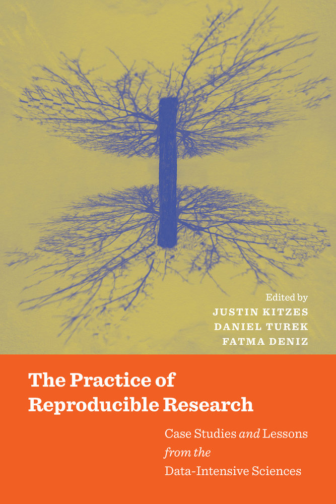
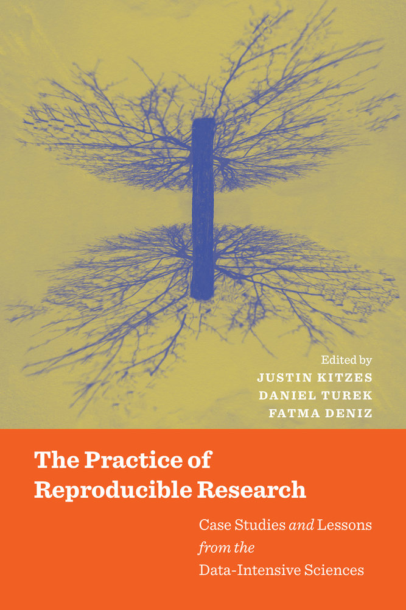

Academia and Open Source
SciPy 2017
Austin, TX
July 12, 2017
Kathryn (Katy) Huff
“... transform lives and serve society by educating, creating knowledge, and putting knowledge to work on a large scale and with excellence. ” - University of Illinois Mission Statement, 2017


 



“I am thinking about something much more important than bombs. I am thinking about computers.” - John von Neumann, 1946.
“the first principle is that you must not fool yourself, and you are the easiest person to fool.” - R. Feynman, 1974
“ The scientific method’s central motivation is the ubiquity of error—the awareness that mistakes and self-delusion can creep in absolutely anywhere and that the scientist’s effort is primarily expended in recognizing and rooting out error. ” - Donoho, 2009.
''Reading brings us unknown friends'' - Honore de Balzac
- BIDS
- Justin Kitzes
- Fatma Imamoglu
- Daniel Turek
- Ben Marwick
- Chapter Authors
- Case Study Authors
- Reproducibility Working Group


Reproducibility and Open Science Conference
May 21&22, 2015
- Three days
- Invitation Only
- Case Studies, Education, Self-assessment
- https://github.com/BIDS/repro-conf


- Incentives
- Pain Points
- Recommmendations from the Authors
- A Little Data
- Needs
Incentives
- verifiability
- collaboration
- efficiency
- extensibility
- "focus on science"
- "forced planning"
- "safety for evolution"
Pain Points
- People and Skills
- Dependencies, Build Systems, and Packaging
- Hardware Access
- Testing
- Publishing
- Data Versioning
- Time and Incentives
- Data restrictions
Recommendations
- version control your code
- open your data
- automate everywhere possible
- document your processes
- test everything
- use free and open tools
Recommendations: Continued
- avoid excessive dependencies
- or at least package their installation
- host code on a collaborative platform (e.g. GitHub)
- get DOIs for data and code
- plain text data is preferred, timeless
- explicitly set seeds
- workflow frameworks can be overkill
Recommendations: Outliers
... in our estimation, if someone was to try to reproduce our research it would probably be more natural for them to write their own scripts as this has the additional benefit that they might not fall into any error we may have accidentally introduced in our scripts.
Recommendations: Outliers
Scientific funding and the number of scientists available to do the work is finite. Therefore not every scientific result can, or should be reproduced.

Emergent Needs
- Common demoninator tools should support reproducibility
- Improved configuration and build systems
- Reproducibility at scale for HPC
- Standardized hardware configurations limited-availability experimental apparatuses.
- Better understanding of incentives for unit testing.
- Greater adoption of unit testing irrespective of programming language.
- Broader community adoption around publication formats that allow parallel editing
- Broader adoption of data storage, versioning, and management tools.
- Increased community recognition of the benefits of reproducibility.
- Incentive systems where reproducibility is not self-incentivizing.
- Standards around scrubbed and representational data
- Community adoption for file format standards within some domains.
- Domain standards which translate well outside of their own scientific communities.
Engineering Academic Software
Manifesto from Dagstuhl Perspectives Workshop 16252
Alice Allen, Cecilia Aragon, Christoph Becker, Jeffrey Carver, Andrei Chis, Benoit Combemale, Mike Croucher, Kevin Crowston, Daniel Garijo, Ashish Gehani, Carole Goble, Robert Haines, Robert Hirschfeld, James Howison, Kathryn Huff, Caroline Jay, Daniel S. Katz, Claude Kirchner, Katie Kuksenok, Ralf Lämmel, Oscar Nierstrasz, Matt Turk, Rob van Nieuwpoort, Matthew Vaughn, and Jurgen J. Vinju
“ Software is often a critical component of scientific research. It can be a component of the academic research methods used to produce research results, or it may itself be an academic research result. Software, however, has rarely been considered to be a citable artifact in its own right. ”
- Dagstuhl Perspectives Manifesto on Engineering Academic Software
Citation
- I will make explicit how to cite my software.
- I will cite the software I used to produce my research results.
- When reviewing, I will encourage others to cite the software they have used.
Careers
- I will recognize software contributions in hiring and promotion within my institution, and encourage others in my institution to do the same.
Development and Use
- I will develop software as open source from the start, whenever possible.
- I will contribute to sustaining software I use and rely on.
- I will match proposed software engineering practices to the actual needs and resources of the project.
- I will help researchers improve the quality of their software without passing judgment.
- I will publish the intellectual contributions of my research software.
- I will document (including usage instructions, and input and output examples), package, release, and archive versions of my software.
Education
must...
- transfer knowledge,
- communicate concepts,
- convey how to think,
- prepare learners for their futures.
But computers have changed everything.
The Hacker Within is Helping
Peer-led organization for scientific computing best practices.


Community
- democratic anarchy
- maximize permissions
- charismatic leadership
- occasional beer

Peer-Driven
- peer teaching and learning
- interdisciplinary normalizes mixed skill levels
- relevant topics
- appeals to the desire to show off
- direct peer-to-peer skill sharing


The Carpentries are Helping

Software Carpentry Workshops
- Two days of hands-on learning
- Scientists teaching scientists
- Instructors are volunteers
- Materials are all open access
The Only Sustainable Solution
Will Infuse Traditional Curriculum with Computing
How?
- open source for collaboration
- example-driven for contextual computation
- project-focused with incremental assignments
- using proven pedagogy backed by science
- and using modern tools like nbgrader
NBGrader: Jess Hamrick

Data Science 8

Cathryn Carson, David Culler, etc. databears.berkeley.edu
Teaching with Notebooks: Lorena Barba
Teaching with Notebooks: Lorena Barba

SciPy Has an Intersectionality Challenge

What's Intersectionality?

No Really. What is it?
"... the study of intersections between forms or systems of oppression, domination or discrimination. An example is ... that the experience of being a [rainbow] [unicorn] cannot be understood in terms of being [rainbow], and of being [a unicorn], considered independently, but must include the interactions, which frequently reinforce each other." -- Wikipedia
Why So Few?
Scientific python seems to reside in a technological space where the combined diversity issues of both science and computing compound one other to ill-effect.
Suggestion: Cast a Wide Net
The old developers aren't diverse. So, we need new developers to join in.
Lower the Barrier, Not Standards
“The feedback giver explained that he 'used high standards' in evaluating the essays for publication in the teaching magazine. Still, he said, having read the student’s essay, he believed the student could meet those standards. His criticism, this form of feedback implies, was offered to help the student meet the publication’s high standards. Black students trusted this feedback as much as white students, and trusting it powerfully motivated them to improve their essay.”
-- Claude Steele, Whistling Vivaldi
Easy Suggestions
New Developer InstructionsComprehensive DocumentationAccessible ListhostDefine Expectations ClearlyCurate Low Hanging FruitGive Permissions GenerouslyStrict Issue Assignment Workflow
Harder Suggestions
Targeted SprintsAppoint an AmbassadorMentor Users DirectlyConsider Users Conferences
Apprenticeship
Apprenticeship
- Active: engagement, decision making, action, safe environment.
- Social: interaction with tools, teachers, and beneficiaries.
- Authentic: deeper connection to the importance of the work.
Credit!
A lot of these thoughts came from my personal experience. However, much of it was annealed from conversations with colleagues throughout the scientific and computing communities (too many of you to name). I got some specific ideas for this particular section of the talk from here and here.
Tireless Pursuit of Funding
THE END
katyhuff.github.io/2017-07-12-scipy
Academia and Open Source: PyCon 2017 by Kathryn Huff is licensed under a Creative Commons Attribution 4.0 International License.
Based on a work at http://katyhuff.github.io/2017-07-12-scipy.